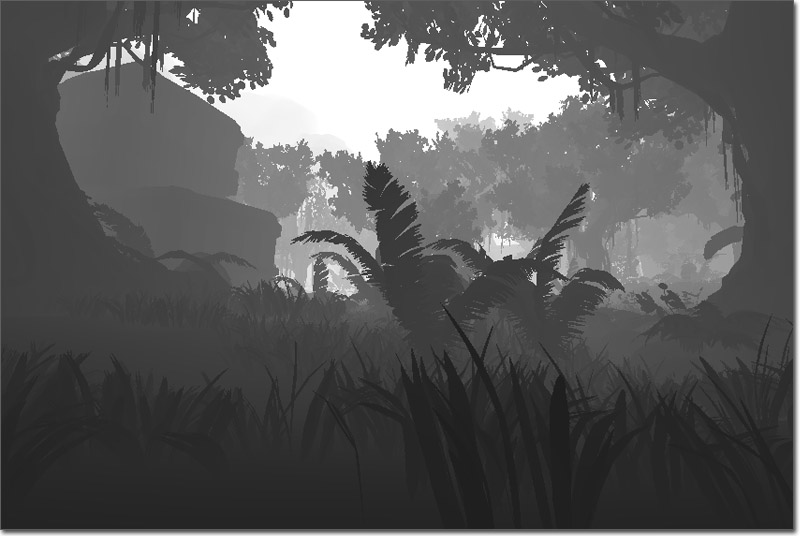
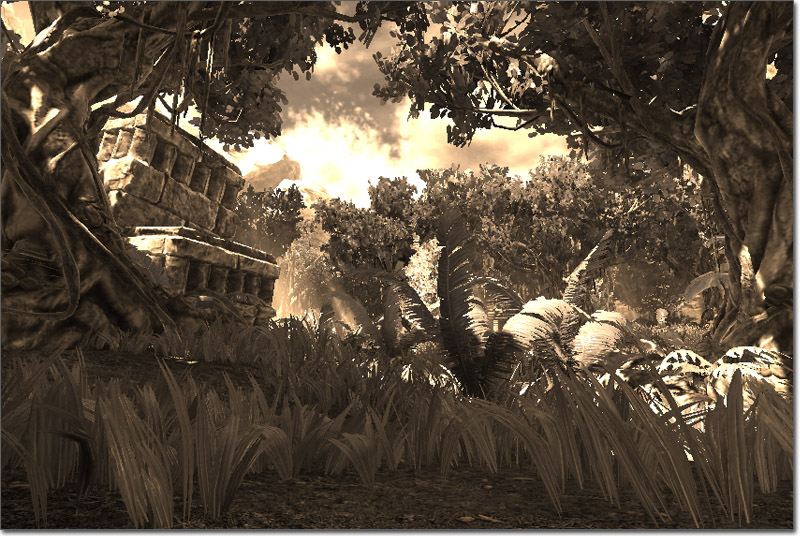

UDN
Search public documentation:
PostProcessMaterialsJP
English Translation
中国翻译
한국어
Interested in the Unreal Engine?
Visit the Unreal Technology site.
Looking for jobs and company info?
Check out the Epic games site.
Questions about support via UDN?
Contact the UDN Staff
中国翻译
한국어
Interested in the Unreal Engine?
Visit the Unreal Technology site.
Looking for jobs and company info?
Check out the Epic games site.
Questions about support via UDN?
Contact the UDN Staff
UE3 ホーム > ポストプロセス エフェクト > ポストプロセス マテリアル エフェクト
ポストプロセス マテリアル エフェクト
概要
MaterialEffect (マテリアル エフェクト)
マテリアル
MaterialEffect で参照されるマテリアルは、通常、現在レンダリングされているシーンをサンプリングしてから、何らかの方法でそれを修正し、その結果を Emissive チャンネルに渡します。ポストプロセスで使用されるマテリアルは、MLM_Unlit Lighting Model (光源処理モデル) を使用する必要があります。また、シーン テクスチャおよびシーン深度をサンプリングするには、透明な Blend Mode (ブレンド モデル) (Translucent [半透明]、Additive [付加]、Modulate [調整]、AlphaComposite [アルファ合成]) をマテリアルを使用しなければなりません。Depth Group (深度グループ)
Scene DPG プロパティは、マテリアル エフェクトによってどのバッファがサンプリングされるかを示します。たいていのマテリアル エフェクトは、SDPG_PostProcess グループを使用しますが、SceneDepth 式を使用するエフェクトはすべて、SDPG_World グループを使用するはずです。マテリアル エフェクトを追加する
ポストプロセス エディタ 内のワークスペース上で右クリックすると、MaterialEffect を追加することができます。Scene (シーン) ノードの出力や他の既存のノードの出力から、MaterialEffect (マテリアルエフェクト) のノードの入力に接続を取ると、その MaterialEffect がチェーンに追加されます。 MaterialEffect を選択すると、プロパティが表示されます。あるマテリアルを MaterialEffect ノードのマテリアル プロパティに割り当てるには、まず、コンテントブラウザでそのマテリアルを選択します。次に、マテリアル プロパティの ボタンを押して、選択されたマテリアルを割り当てます。 ポストプロセス チェーンおよびシーン上でこの新たな MaterialEffect のエフェクトを見るには、MaterialEffect が追加されている PostProcessChain (ポストプロセス チェーン) が、デフォルトのポストプロセスとして設定される必要があります。そのためには、DefaultEngine.ini ファイルで、DefaultPostProcessName プロパティを使用します。[Engine.Engine] DefaultPostProcessName=EngineMaterials.DefaultScenePostProcess [UnrealEd.UnrealEdEngine] DefaultPostProcessName=EngineMaterials.DefaultScenePostProcessエディタ内でエフェクトをプレビューするには、MaterialEffect ノードの Show In Editor (エディタで表示) プロパティにチェックを入れ、パースペクティブ ビューポートで PostProcessEffects のフラグが有効になっている必要があります。
SceneTexture Expression (シーン テクスチャの式)
 最も基本的な使用法は、RGB 出力を、シェーダーのための Emissive 入力に接続させるというものです。この例がポストプロセス システムで使用される場合、視覚的な結果は何らもたらされません。理由は、単にシーンをレンダリングしているだけであって、結果に対して何ら付加的な処理を行っていないからです。SceneTexture は、 UVs 入力をもっていますが、これはやはり TextureSample 上のものと同一のものです。タイル処理および UV オフセットを変更するには、この UVs 入力を使用します。
*注意: * マテリアル エディタ内では、SceneTexture によってシーンが正しくレンダリングされません。その使用状況を見るには、ポストプロセス システムで使われる必要があります。
最も基本的な使用法は、RGB 出力を、シェーダーのための Emissive 入力に接続させるというものです。この例がポストプロセス システムで使用される場合、視覚的な結果は何らもたらされません。理由は、単にシーンをレンダリングしているだけであって、結果に対して何ら付加的な処理を行っていないからです。SceneTexture は、 UVs 入力をもっていますが、これはやはり TextureSample 上のものと同一のものです。タイル処理および UV オフセットを変更するには、この UVs 入力を使用します。
*注意: * マテリアル エディタ内では、SceneTexture によってシーンが正しくレンダリングされません。その使用状況を見るには、ポストプロセス システムで使われる必要があります。
SceneDepth (シーン深度) 式

たいていの場合、SceneDepth 式を使用することは、深度の計算結果を望みの値レンジまでスケーリングおよびバイアスするのに付加的な計算を必要とします。たとえば、SceneDepth をある値で除算する （SceneDepth / 1024） と、正規化された距離の値が得られます。この値は、深度が 0 から 1024 まで増えるにともなって、0 から 1 まで増加します。これを [0,1] の範囲にクランプすることによって、さまざまなエフェクトに活用することができます。たとえば、上記例のように、深度をグレイスケールにマッピングする場合などが考えられます。マテリアルのサンプル
シーンのティント

この例では、シーンカラーを再カラーリングして、セピア調のエフェクトを作り出す方法について説明します。 (フルサイズの表示には画像をクリック) まず、 SceneTexture (シーンテクスチャ) 式を追加して、Desaturation (デサチュレーション) の式に渡すことによって、シーンカラーをデサチュレートします (彩度を落とす)。
ComponentMask (成分マスク) を追加することによって、シーンカラーの R チャンネルを分離し、さらに、それに Constant (定数) 8 を掛けます。
この値を、(0.4875, 0.2588, 0.0784) という値をもつ Constant3Vector と掛け合わせます。このベクターは、セピアの「着色」を表現しています。
さらに、この計算結果をデサチュレートされたバージョンのシーンと再結合させます。そのためには、Add (追加) 式を使用して、シーンの他要素 (非 red) を再導入します。
最終的な計算結果は、Emissive (エミッシブ) イベントチャンネルに接続します。
まず、 SceneTexture (シーンテクスチャ) 式を追加して、Desaturation (デサチュレーション) の式に渡すことによって、シーンカラーをデサチュレートします (彩度を落とす)。
ComponentMask (成分マスク) を追加することによって、シーンカラーの R チャンネルを分離し、さらに、それに Constant (定数) 8 を掛けます。
この値を、(0.4875, 0.2588, 0.0784) という値をもつ Constant3Vector と掛け合わせます。このベクターは、セピアの「着色」を表現しています。
さらに、この計算結果をデサチュレートされたバージョンのシーンと再結合させます。そのためには、Add (追加) 式を使用して、シーンの他要素 (非 red) を再導入します。
最終的な計算結果は、Emissive (エミッシブ) イベントチャンネルに接続します。
Distortion (歪み)
この例では、SceneTexture (シーンテクスチャ) の UV テクスチャ座標を修正することによって、熱や水の歪みのエフェクトを作成する方法について解説します。 (フルサイズの表示には画像をクリック) ここで用いられている基本的な原則は、次のとおりです。すなわち、 パンする TextureSample の R および G チャンネルが ScreenPosition UV テクスチャ座標に加えられて歪みを生じさせるということです。まず、U および V タイリングが 2.0 と 2.0 である TextureCoordinate (テクスチャ座標) 式が追加されます。TextureCoordinate の出力は、X および Y の速度がそれぞれ 0.0 と 0.375 である Panner (パナー) の Coordinate (座標) 入力に接続されます。Panner の出力は、虹雲イメージ (下図) のテクスチャをもつ TextureSample UV 入力に接続されます。TextureSample の RGB 出力は、ComponentMask (成分マスク) に渡されて、R と G チャンネルが分離されます。ComponentMask の出力に、Constant (定数) 0.05 を掛け合わせることにって、歪みの量を減らします。
ここで用いられている基本的な原則は、次のとおりです。すなわち、 パンする TextureSample の R および G チャンネルが ScreenPosition UV テクスチャ座標に加えられて歪みを生じさせるということです。まず、U および V タイリングが 2.0 と 2.0 である TextureCoordinate (テクスチャ座標) 式が追加されます。TextureCoordinate の出力は、X および Y の速度がそれぞれ 0.0 と 0.375 である Panner (パナー) の Coordinate (座標) 入力に接続されます。Panner の出力は、虹雲イメージ (下図) のテクスチャをもつ TextureSample UV 入力に接続されます。TextureSample の RGB 出力は、ComponentMask (成分マスク) に渡されて、R と G チャンネルが分離されます。ComponentMask の出力に、Constant (定数) 0.05 を掛け合わせることにって、歪みの量を減らします。
 Screen Align (スクリーンアラインメント) が true に設定されている ScreenPosition (スクリーン位置) 式が、ComponentMask に渡されます。これによって、R および G チャンネルが分離され、メインの UV テクスチャ座標として使用されることになります。 ComponentMask の出力に 0.975 の Constant (定数) を掛け合わせることによって、ビューポートの境界内に渡されるシーンを拡張します。これは、歪みが適用されるときに、シーンのエッジが目につかないようにするために必要な措置です。
上記ネットワークそれぞれの終端に Multiply (乗算) 式が 2 つありますが、それらの出力が Add (追加) 式によって結合されます。 計算結果が、SceneTexture 式の UV 入力に接続されます。最後に、SceneTexture の RGB 出力が、マテリアルの Emissive (エミッシブ) 入力チャンネルに接続されます。
Screen Align (スクリーンアラインメント) が true に設定されている ScreenPosition (スクリーン位置) 式が、ComponentMask に渡されます。これによって、R および G チャンネルが分離され、メインの UV テクスチャ座標として使用されることになります。 ComponentMask の出力に 0.975 の Constant (定数) を掛け合わせることによって、ビューポートの境界内に渡されるシーンを拡張します。これは、歪みが適用されるときに、シーンのエッジが目につかないようにするために必要な措置です。
上記ネットワークそれぞれの終端に Multiply (乗算) 式が 2 つありますが、それらの出力が Add (追加) 式によって結合されます。 計算結果が、SceneTexture 式の UV 入力に接続されます。最後に、SceneTexture の RGB 出力が、マテリアルの Emissive (エミッシブ) 入力チャンネルに接続されます。
Depth Mask (深度マスク)
この例では、SceneDepth (シーン深度) をマスクとして使用することによって、ノーマル SceneTexture の出力と上記で作成された歪みエフェクトを補間する方法について説明します。 (フルサイズの表示には画像をクリック) ここで扱われている歪みのセットアップについては、上記 Distortion (歪み)? を参照してください。
SceneDepth (シーン深度) 式が追加され、その出力が Constant (定数) 5120 によって除算されます。これによって、値が使いやすい範囲に正規化されます。Divide (除算) 式の出力は、最小値 0.125、最大値 1.0 の範囲をもつ ConstantClamp (定数クランプ) 式に渡されます。クランプされた値は、LinearInterpolate (線形補間) 式のアルファ入力に接続されます。
歪みネットワークの ScreenPosition 部分に由来する Multiply (乗算) ノードの出力は、LinearInterpolate (線形補間) 式の A 入力に接続されます。これは、カメラ近くのオブジェクトを見るときに使用する未修正の UV テクスチャ座標を表します。
歪みネットワークに由来する Add (追加) 式の出力は、LinearInterpolate (線形補間) 式の B 入力に接続されます。これは、遠くのオブジェクトを見る場合に使用する修正済み (すなわち歪んだ) UV テクスチャ座標を表します。
LinearInterpolate 式の出力は、SceneTexture 式の UV 入力に接続されます。次に、この SceneTexture 式の RGB 出力は、マテリアルの Emissive (エミッシブ) 入力に接続されます。
ここで扱われている歪みのセットアップについては、上記 Distortion (歪み)? を参照してください。
SceneDepth (シーン深度) 式が追加され、その出力が Constant (定数) 5120 によって除算されます。これによって、値が使いやすい範囲に正規化されます。Divide (除算) 式の出力は、最小値 0.125、最大値 1.0 の範囲をもつ ConstantClamp (定数クランプ) 式に渡されます。クランプされた値は、LinearInterpolate (線形補間) 式のアルファ入力に接続されます。
歪みネットワークの ScreenPosition 部分に由来する Multiply (乗算) ノードの出力は、LinearInterpolate (線形補間) 式の A 入力に接続されます。これは、カメラ近くのオブジェクトを見るときに使用する未修正の UV テクスチャ座標を表します。
歪みネットワークに由来する Add (追加) 式の出力は、LinearInterpolate (線形補間) 式の B 入力に接続されます。これは、遠くのオブジェクトを見る場合に使用する修正済み (すなわち歪んだ) UV テクスチャ座標を表します。
LinearInterpolate 式の出力は、SceneTexture 式の UV 入力に接続されます。次に、この SceneTexture 式の RGB 出力は、マテリアルの Emissive (エミッシブ) 入力に接続されます。